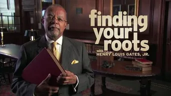

The genetics
Genetics is one of the series' two main tools, alongside traditional archival research. Guests take DNA tests whose results are explained on screen: Y-chromosome DNA, which traces the direct paternal line; mitochondrial DNA, which traces the direct maternal line; and autosomal DNA, used to estimate ethnic or geographic ancestry and to identify relatives. DNA matching is used to confirm or uncover biological relationships, for example to identify an unknown ancestor or link a guest to living cousins, and in some episodes groups of ordinary people compare their estimated African, European and Native American ancestry. The series has made genetic genealogy familiar to a wide American audience. Ethnicity percentages are estimates whose reliability depends on the reference populations and markers used, and early estimates were often inaccurate, whereas matching relatives through shared DNA is a more direct use of the data.
The story
Finding Your Roots with Henry Louis Gates, Jr. is a PBS documentary series, first broadcast in 2012, in which the scholar Henry Louis Gates Jr. explores the family histories of well-known guests. Each episode follows two or three celebrities, and sometimes ordinary people, who are presented with a "book of life" compiled by professional genealogists: a family tree, copies of historical records, photos of newly found relatives and the results of DNA tests. Gates guides each guest through discoveries about immigrant and enslaved ancestors, family secrets and unexpected relationships, and some guests are reunited with relatives found through DNA. The series continues Gates's earlier PBS programmes African American Lives and Faces of America. Its third season was postponed after it emerged that actor Ben Affleck had persuaded Gates to omit information about a slave-owning ancestor.